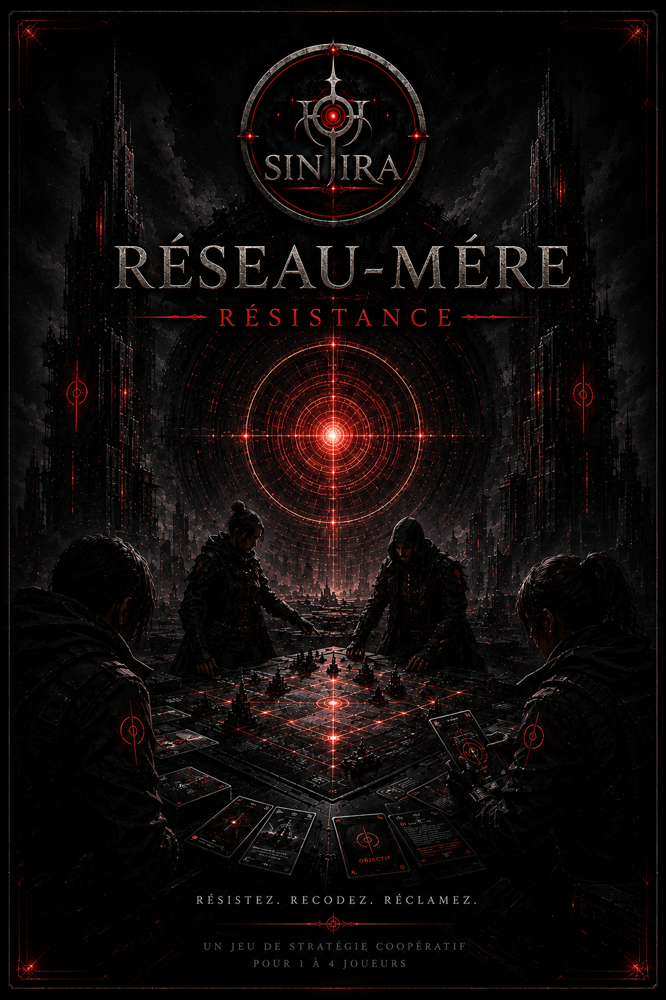

Ce qui est officiel
- Le titre : Réseau-Mère : Résistance.
- Il s’agit d’un projet de jeu relié à SINJIRA.
- Cette page fait partie de la section jeux du portail de la saga.
- L’ancien nom lié à ce projet : Le Premier Refuge.
SINJIRA
Cette page constitue l’espace officiel du projet à l’intérieur de SINJIRA. Elle est prête à accueillir les informations validées, sans inventer de règles ni de mécaniques.
Note : Ce projet remplace désormais l’ancien intitulé « Le Premier Refuge ».

Résumé officiel du concept et de sa place dans la saga.
Section à remplir quand les documents officiels seront disponibles.
Étapes de développement, tests et versions à venir.
Images, guides, annonces et téléchargements associés au projet.